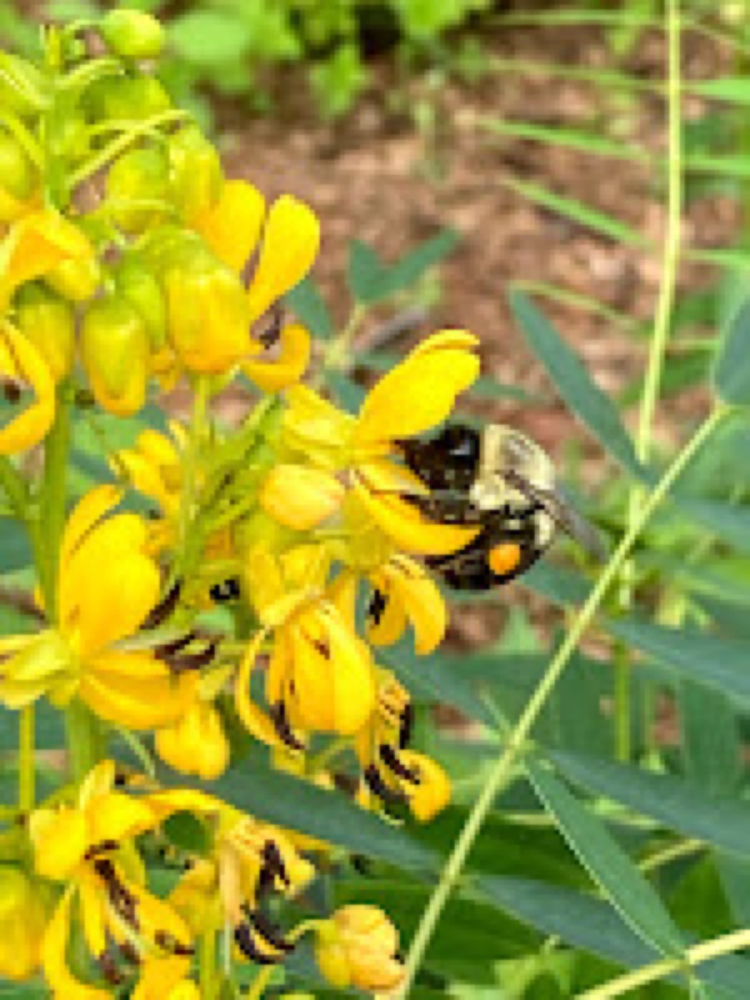
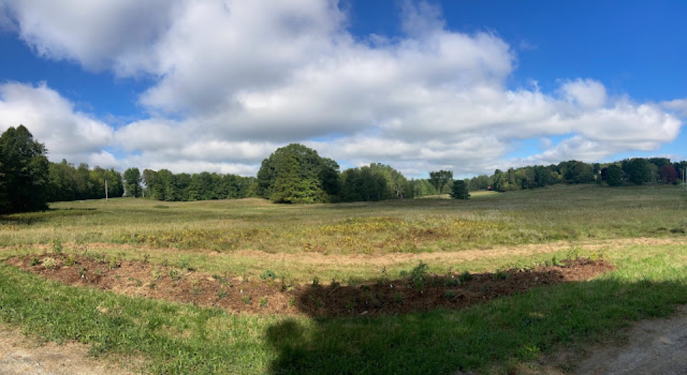
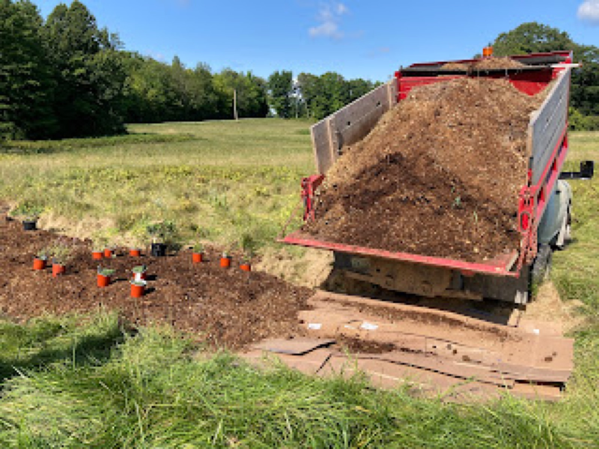
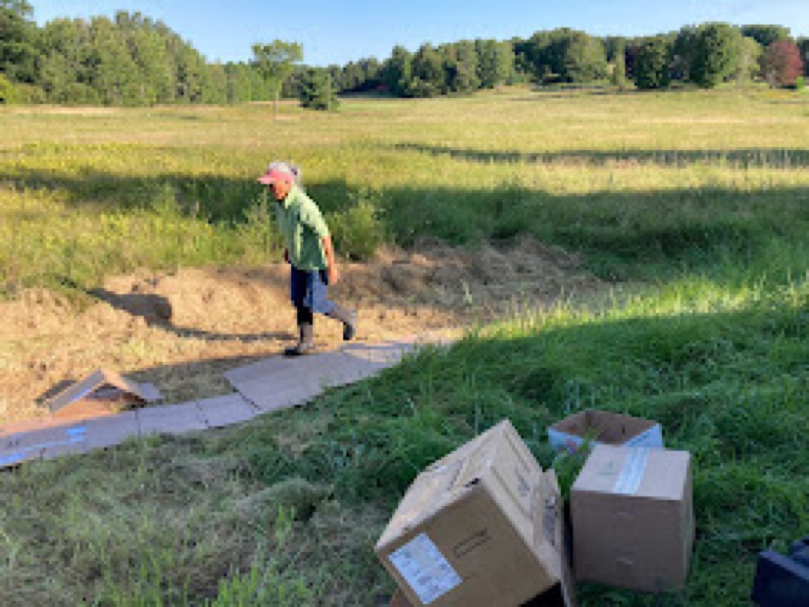
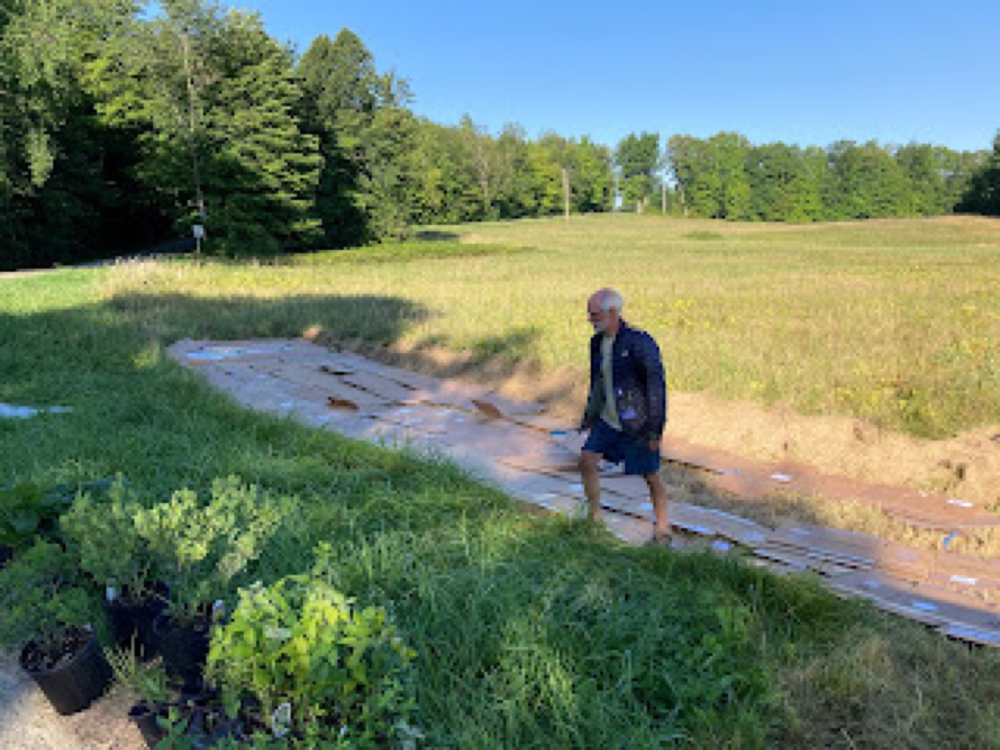

December 2021
The Pollinator Garden at Quaker’s Corners

For nearly a decade I’ve been running, walking, driving, and biking by this particular corner in Charlotte, Vermont. This beautiful, preserved piece of land between Raven’s Ridge and the start (or the end) of the historic Lewis Creek road. This is my heaven.
I tend to notice, even more now, the different types of species that are present. When something is absent, that is felt with a heavy heart. This past year, the beautiful Cloudless Sulphur was largely absent where it was once abundant. Perhaps this is most evident if you live on our side of town, as you may have run over hundreds of them while trying to get home from work or simply leaving your driveway. As a runner I remember, stopping and picking up dead sulphurs and tossing them to the side of the road. Perhaps this is overly empathic in some people’s view, however I’d like to think everything deserves a dignified death and half dead butterflies strewn about could hardly be ignored.
Did we run over all of the Cloudless Sulphurs? Why did I count only four or five butterflies over the course of an entire gardening season? I needed to devise a plan to bring them back. My thought process with this, as with any other species, is to figure out the host plant. Simply enough, the Cloudless Sulphur requires Wild Senna for a host. So let’s plant a garden where it’s needed. This field garden must host the Cloudless Sulphur and Monarchs, Mourning Cloaks and more. The installation of this garden, nearly 1,000 square feet, will hopefully yield many happy, butterflies Spring 2022.
Thanks to Pati and Stuart, my patient and understanding neighbors, this garden has been installed and is ready to welcome butterflies, bees, and all forms of life. Let’s hope for a good year in 2022 for the Cloudless Sulphur. If you live in Charlotte, consider planting some Wild Senna. Horsford Nursery carries the plant for a rather inexpensive sum. Let’s not let another species go by the wayside. As for me, I’ll be planting Wild Senna on Lewis Creek rd.




Filed in the garden journal · December 2021